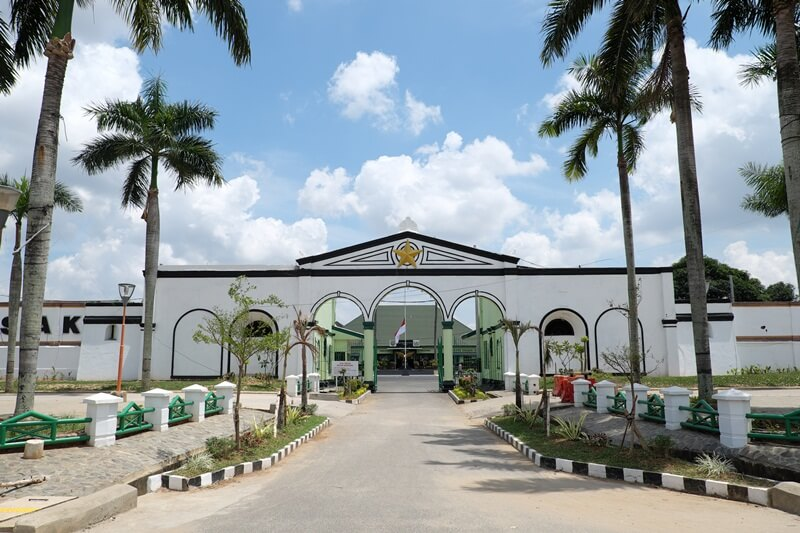

Sejarah Kota Palembang

Benteng Kuto Besak, Palembang
Palembang Pusat Kerajaan Sriwijaya
Palembang dikenal sebagai salah satu kota tertua di Indonesia. Pada abad ke-7, wilayah ini menjadi pusat Kerajaan Sriwijaya, kerajaan maritim besar yang menguasai jalur perdagangan di Selat Malaka dan menjadi pusat pembelajaran agama Buddha di Asia Tenggara. Kota ini terletak di tepian Sungai Musi yang menjadi jalur utama perdagangan.

Prasasti Kedukan Bukit
Prasasti Kedukan Bukit dan Hari Jadi Kota
Prasasti Kedukan Bukit yang ditemukan di tepi Sungai Tatang memuat tulisan bertarikh tahun 682 Masehi tentang perjalanan suci Dapunta Hyang. Berdasarkan prasasti ini, hari jadi Kota Palembang diperingati pada tanggal 17 Juni 683 Masehi.
Kesultanan Palembang Darussalam
Setelah masa Sriwijaya, Palembang berkembang menjadi Kesultanan Palembang Darussalam yang berdiri pada tahun 1659. Sultan Mahmud Badaruddin II memimpin perlawanan terhadap Belanda pada awal abad ke-19. Setelah kalah, beliau diasingkan ke Ternate pada tahun 1821, dan kesultanan dihapus oleh Belanda pada tahun 1823. Sultan Mahmud Badaruddin II kemudian ditetapkan sebagai Pahlawan Nasional.
Masa Kolonial dan Perjuangan Kemerdekaan
Pada masa Hindia Belanda, Palembang ditetapkan sebagai kotapraja (gemeente) pada tahun 1906. Setelah Indonesia merdeka, rakyat Palembang ikut mempertahankan kemerdekaan, dan peristiwa Perlawanan Lima Hari Lima Malam pada 1-5 Januari 1947 menjadi bukti keberanian rakyat melawan tentara Belanda.
Palembang Masa Kini
Kini Palembang merupakan ibu kota Provinsi Sumatera Selatan dan dikenal sebagai kota perdagangan, kota budaya, dan kota wisata. Jembatan Ampera yang selesai dibangun pada tahun 1965 menjadi ikon kota, dan Palembang juga pernah menjadi tuan rumah Asian Games 2018 bersama Jakarta.
© 2026 Palembang Bumi Sriwijaya. Semua hak dilindungi.
Dibuat oleh Muhamad Guntur Ramadhan | Universitas Muhammadiyah Bengkulu